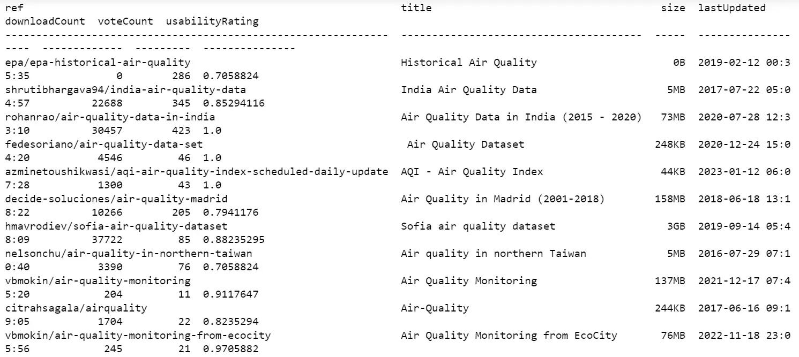
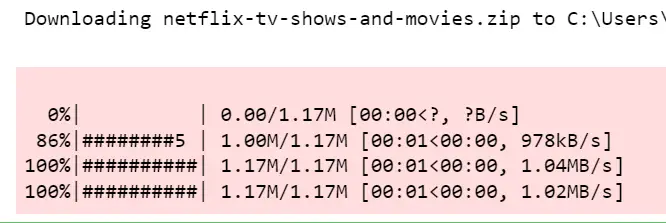

Using the Kaggle Datasets API in Python¶
Have you ever wondered how data scientists or machine learning developers find data for their projects to improve their skills? Several popular libraries like Seaborn and Scikit-Learn contain so-called toy datasets, but perhaps the most complete such repository of data is on Kaggle.com.
Fortunately, Kaggle.com features a Python API we can use to explore and load this data. In this article, we’ll look at using the Kaggle API to load datasets and how to use them in different cases.
We will also look at advanced uses of the Kaggle API, including uploading multiple datasets at once and accessing different versions of datasets or competition files. We’ll give code examples in Python and explain the results in each step.
Intro to Kaggle and its Datasets¶
Kaggle is a popular platform for data science and machine learning competitions and a place to find and publish datasets. Kaggle hosts a variety of data sets in various formats, including tabular data, images, and text.
One of Kaggle’s handy features is the ability to upload datasets using the Kaggle API. This allows us to access datasets from the command line without uploading them through the website manually.
The Kaggle API can be especially useful for automating data entry and integration tasks.
Setting up the Kaggle API¶
In this section, we’ll show you how to set up the Kaggle API in a Jupyter notebook so you can easily access and download datasets and competitions from Kaggle. Here are the steps to set up the Kaggle API in a Jupyter notebook:
Go to the Kaggle website, sign in, or sign up for your Kaggle account.
Go to your account settings by clicking on your avatar in the top right corner and selecting “Account” from the dropdown menu.
Scroll down on the page on the right to the “API” section and click on the “Create New API Token” button. This will download a file called “kaggle.json” to your computer, which contains your API key and secret.
Move the “kaggle.json” file to the location a .kaggle directory underneath your user home directory. This is typically the root of your user directory (e.g.,
~/.kaggle/kaggle.jsonon Linux orC:\Users\[Username]\.kaggle\kaggle.jsonon Windows).Install the kaggle Python package using the following code in a Jupyter notebook cell:
!pip install kaggle
Now that we have set up the Kaggle API, we can use the Kaggle command line tool or the Kaggle Python module to access Kaggle datasets and competitions.
Here’s an example of how to use the Kaggle API to list all the datasets available on Kaggle in a Jupyter notebook:
import kaggle
# List of all datasets available on Kaggle
kaggle.api.dataset_list()
Output:

Example of the list of datasets
With these simple steps, we can set up Kaggle API and now can access and download a wide range of datasets and competition data directly from your Jupyter Notebook.
Sometimes we have an idea in our head, and to implement it, we need a dataset on a certain topic. We can use the Kaggle datasets_list function with the search argument to search for datasets.
Let’s take a closer look at examples of how to use these methods:
import kaggle
# searching for datasets on Kaggle about air quality
datasets = kaggle.api.datasets_list(search="air quality")
print(datasets)
Output:

The datasets_list function of the Kaggle API client to search for datasets related to “air quality”. The function takes the parameter search, which specifies the search query, in our case it is "air quality".
The function returns a list of Dataset objects that match our query. Each Dataset object represents a dataset on Kaggle and has different properties, such as name, description and dataset creation date.
To make this easier to read, we have a couple of options. First, we can run the query using the Kaggle command line interface from within Jupyter Notebook.
!kaggle datasets list -s "air quality"
Output:

This will return a list of air quality-related datasets, along with information about the datasets, such as their names, creators, and sizes.
We can also use additional options in the Kaggle datasets list command to further refine the search results, such as sorting results by relevance or date and limiting the number of results returned.
Another option to make the list easier to deal with is to return the results of the datasets_list call to a Pandas DataFrame constructor.
!pip install pandas
import pandas as pd
datasets = kaggle.api.datasets_list(search="air quality")
pd.DataFrame(datasets)
The output is rather wide so we won’t display it here, but you can scroll to see all of it or otherwise work with it.
Downloading Kaggle Datasets Using the API¶
One of the main benefits of the Kaggle API is the ability to download datasets directly from your Jupyter Notebook. This eliminates the need to download datasets from the Kaggle website manually and can save us time and effort.
This section will discuss several ways of downloading Kaggle datasets using the API in a Jupyter Notebook, along with code examples and explanations.
Let’s download the dataset named “senapatirajesh/netflix-tv-shows-and-movies”:
!kaggle datasets download -d senapatirajesh/netflix-tv-shows-and-movies
Output:

The Kaggle API will download the dataset as a zip file to the Jupyter Notebook’s current working directory. We can then unzip the file and use the data in our notebooks and analysis.
Here is an example of how to unzip the downloaded file and read it into a Pandas DataFrame:
# importing modules
import zipfile
import pandas as pd
with zipfile.ZipFile("netflix-tv-shows-and-movies.zip","r") as zip_ref:
# extracting content in the zipfile
zip_ref.extractall()
# reading the contents of the "NetFlix.csv"
df = pd.read_csv("NetFlix.csv")
# printing first 6 raws of the dataframe
df.head(6)
The code above first imports the
zipfilemodule, which provides tools for working with ZIP archives.Then, it uses the
**zipfile.ZipFile**function to open the “netflix-tv-shows-and-movies.zip” file for reading (**"r"**).The
withstatement ensures that the ZIP file will be closed automatically after executing the code inside the block.Next, the
zip_ref.extractall()method is used to extract the contents of the ZIP archive to the current working directory.Finally, the code uses the
pd.read_csvfunction from the Pandas library to read the contents of the “NetFlix.csv” file into a Pandas dataframe, which is stored in the variabledf.This allows us to easily work with the data in the file using the powerful tools provided by the Pandas library.
Output:

This was one of the methods of downloading datasets from Kaggle using Kaggle API. Let’s look at other methods for downloading the same dataset.
The kaggle.api.dataset_download_files function is another way to download datasets from Kaggle using the API.
This function allows us to download specific files within a dataset, rather than the entire dataset.
Here’s how to use the kaggle.api.dataset_download_files function to download a specific file from a Kaggle dataset in Jupyter Notebook:
kaggle.api.dataset_download_files("senapatirajesh/netflix-tv-shows-and-movies", path="./", unzip=True, quiet=False)
Output:

As you can see in this example, the dataset_download_files function takes three arguments:
"senapatirajesh/netflix-tv-shows-and-movies"is the identifier for the dataset “NetFlix”.path="./"specifies the directory where the file will be loaded.
“./” argument loads the file into the current working directory.unzip=True specifies that the file must be unzipped after downloading.If
unzip=False, the file will be downloaded in its original format.
The function kaggle.api.dataset_download_files will download the specified file to the specified directory and unzip it if unzip=True. We can then use the file in Jupyter Notebook just like any other file.
Now, let’s open the downloaded dataset:
# importing pandas to open the dataset
import pandas as pd
# reading the cvs file
df = pd.read_csv("NetFlix.csv")
# displaying the 6 raws of contents of the cvs file
df.head(6)
Output:

These were two methods that we can use to download specific files from Kaggle datasets using the kaggle.api.dataset_download_files function or the !kaggle datasets download -d dataset_identifier. So with just a few lines of code, we can easily access and use certain files in the Kaggle dataset in your projects.
Downloading Multiple Datasets at Once¶
Downloading multiple datasets at once using the Kaggle API in Python is a handy way to save time when you need to load multiple datasets from Kaggle for your projects.
Here’s how we can get multiple datasets at once using the Kaggle API in Python:
import kaggle
# list of dataset IDs to download
dataset_ids = ['themrityunjaypathak/imdb-top-100-movies', 'ahbab911/top-250-korean-dramas-kdrama-dataset', 'senapatirajesh/netflix-tv-shows-and-movies']
# downloading the datasets
for dataset_id in dataset_ids:
kaggle.api.dataset_download_files(dataset_id, path="./", unzip=True)
So, to load multiple datasets, we just need to create a list with identifiers - author and dataset name - and then loop them. To access these datasets, you can use pandas.read_csv() for cvs files and pandas.read_excel() for xls, xlsx, xlsm, xlsb files.
Using Kaggle Datasets in Various Cases¶
Kaggle is a platform that hosts a variety of data sets for different use cases:
Machine Learning
Kaggle datasets are valuable for machine learning enthusiasts, data scientists, and researchers. The datasets available on Kaggle range from simple to large-scale datasets used in industry and academia.Data Exploration
Kaggle datasets can be used for data exploration and analysis. This includes data cleaning and preprocessing tasks, exploring patterns and relationships in the data, and creating visualizations to help gain insights into the data.Data visualization
Kaggle data sets can also be used to visualize data, such as creating charts, graphs, and maps to help convey insights and conclusions.Competitions
Kaggle also runs machine learning competitions where participants can use Kaggle datasets to build models and compete against others to see who achieves the best results.
The variety of datasets available on Kaggle and the ability to use them for many purposes make Kaggle a valuable resource for anyone who works with data.
Conclusion¶
Using the Kaggle API, you can easily access datasets and competition files from the command line, making your data science and machine learning workflow more streamlined and efficient.
This tutorial covered what Kaggle is, the Kaggle API, how to use it, and why. We learned different methods of downloading datasets directly from Jupiter notebook, including how to download multiple datasets at once, search certain topic-related datasets, and many more.